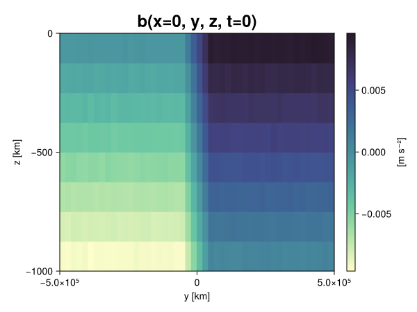
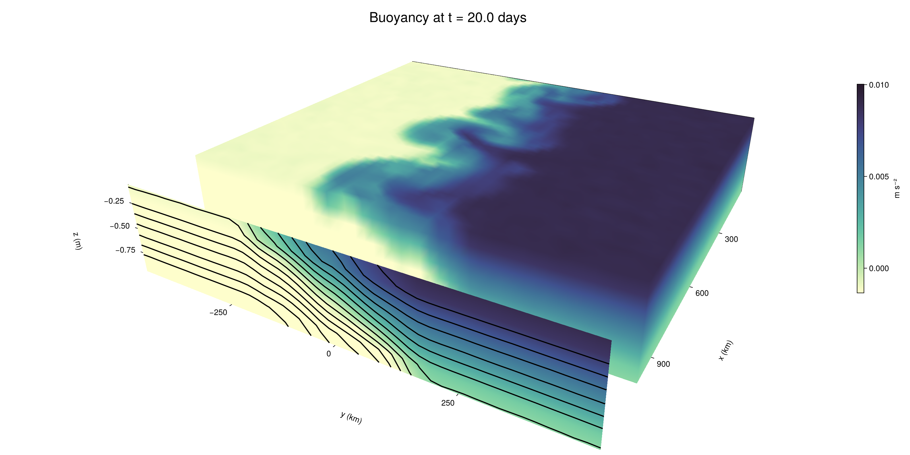

Baroclinic adjustment
In this example, we simulate the evolution and equilibration of a baroclinically unstable front.
Install dependencies
First let's make sure we have all required packages installed.
using Pkg
pkg"add Oceananigans, CairoMakie"using Oceananigans
using Oceananigans.UnitsGrid
We use a three-dimensional channel that is periodic in the x direction:
Lx = 1000kilometers # east-west extent [m]
Ly = 1000kilometers # north-south extent [m]
Lz = 1kilometers # depth [m]
grid = RectilinearGrid(size = (48, 48, 8),
x = (0, Lx),
y = (-Ly/2, Ly/2),
z = (-Lz, 0),
topology = (Periodic, Bounded, Bounded))48×48×8 RectilinearGrid{Float64, Periodic, Bounded, Bounded} on CPU with 3×3×3 halo
├── Periodic x ∈ [0.0, 1.0e6) regularly spaced with Δx=20833.3
├── Bounded y ∈ [-500000.0, 500000.0] regularly spaced with Δy=20833.3
└── Bounded z ∈ [-1000.0, 0.0] regularly spaced with Δz=125.0Model
We built a HydrostaticFreeSurfaceModel with an ImplicitFreeSurface solver. Regarding Coriolis, we use a beta-plane centered at 45° South.
model = HydrostaticFreeSurfaceModel(; grid,
coriolis = BetaPlane(latitude = -45),
buoyancy = BuoyancyTracer(),
tracers = :b,
momentum_advection = WENO(),
tracer_advection = WENO())HydrostaticFreeSurfaceModel{CPU, RectilinearGrid}(time = 0 seconds, iteration = 0)
├── grid: 48×48×8 RectilinearGrid{Float64, Periodic, Bounded, Bounded} on CPU with 3×3×3 halo
├── timestepper: QuasiAdamsBashforth2TimeStepper
├── tracers: b
├── closure: Nothing
├── buoyancy: BuoyancyTracer with ĝ = NegativeZDirection()
├── free surface: ImplicitFreeSurface with gravitational acceleration 9.80665 m s⁻²
│ └── solver: FFTImplicitFreeSurfaceSolver
├── advection scheme:
│ ├── momentum: WENO reconstruction order 5
│ └── b: WENO reconstruction order 5
└── coriolis: BetaPlane{Float64}We start our simulation from rest with a baroclinically unstable buoyancy distribution. We use ramp(y, Δy), defined below, to specify a front with width Δy and horizontal buoyancy gradient M². We impose the front on top of a vertical buoyancy gradient N² and a bit of noise.
"""
ramp(y, Δy)
Linear ramp from 0 to 1 between -Δy/2 and +Δy/2.
For example:
```
y < -Δy/2 => ramp = 0
-Δy/2 < y < -Δy/2 => ramp = y / Δy
y > Δy/2 => ramp = 1
```
"""
ramp(y, Δy) = min(max(0, y/Δy + 1/2), 1)
N² = 1e-5 # [s⁻²] buoyancy frequency / stratification
M² = 1e-7 # [s⁻²] horizontal buoyancy gradient
Δy = 100kilometers # width of the region of the front
Δb = Δy * M² # buoyancy jump associated with the front
ϵb = 1e-2 * Δb # noise amplitude
bᵢ(x, y, z) = N² * z + Δb * ramp(y, Δy) + ϵb * randn()
set!(model, b=bᵢ)Let's visualize the initial buoyancy distribution.
using CairoMakie
# Build coordinates with units of kilometers
x, y, z = 1e-3 .* nodes(grid, (Center(), Center(), Center()))
b = model.tracers.b
fig, ax, hm = heatmap(view(b, 1, :, :),
colormap = :deep,
axis = (xlabel = "y [km]",
ylabel = "z [km]",
title = "b(x=0, y, z, t=0)",
titlesize = 24))
Colorbar(fig[1, 2], hm, label = "[m s⁻²]")
fig
Simulation
Now let's build a Simulation.
simulation = Simulation(model, Δt=20minutes, stop_time=20days)Simulation of HydrostaticFreeSurfaceModel{CPU, RectilinearGrid}(time = 0 seconds, iteration = 0)
├── Next time step: 20 minutes
├── Elapsed wall time: 0 seconds
├── Wall time per iteration: NaN days
├── Stop time: 20 days
├── Stop iteration : Inf
├── Wall time limit: Inf
├── Callbacks: OrderedDict with 4 entries:
│ ├── stop_time_exceeded => Callback of stop_time_exceeded on IterationInterval(1)
│ ├── stop_iteration_exceeded => Callback of stop_iteration_exceeded on IterationInterval(1)
│ ├── wall_time_limit_exceeded => Callback of wall_time_limit_exceeded on IterationInterval(1)
│ └── nan_checker => Callback of NaNChecker for u on IterationInterval(100)
├── Output writers: OrderedDict with no entries
└── Diagnostics: OrderedDict with no entriesWe add a TimeStepWizard callback to adapt the simulation's time-step,
conjure_time_step_wizard!(simulation, IterationInterval(20), cfl=0.2, max_Δt=20minutes)Also, we add a callback to print a message about how the simulation is going,
using Printf
wall_clock = Ref(time_ns())
function print_progress(sim)
u, v, w = model.velocities
progress = 100 * (time(sim) / sim.stop_time)
elapsed = (time_ns() - wall_clock[]) / 1e9
@printf("[%05.2f%%] i: %d, t: %s, wall time: %s, max(u): (%6.3e, %6.3e, %6.3e) m/s, next Δt: %s\n",
progress, iteration(sim), prettytime(sim), prettytime(elapsed),
maximum(abs, u), maximum(abs, v), maximum(abs, w), prettytime(sim.Δt))
wall_clock[] = time_ns()
return nothing
end
add_callback!(simulation, print_progress, IterationInterval(100))Diagnostics/Output
Here, we save the buoyancy, $b$, at the edges of our domain as well as the zonal ($x$) average of buoyancy.
u, v, w = model.velocities
ζ = ∂x(v) - ∂y(u)
B = Average(b, dims=1)
U = Average(u, dims=1)
V = Average(v, dims=1)
filename = "baroclinic_adjustment"
save_fields_interval = 0.5day
slicers = (east = (grid.Nx, :, :),
north = (:, grid.Ny, :),
bottom = (:, :, 1),
top = (:, :, grid.Nz))
for side in keys(slicers)
indices = slicers[side]
simulation.output_writers[side] = JLD2OutputWriter(model, (; b, ζ);
filename = filename * "_$(side)_slice",
schedule = TimeInterval(save_fields_interval),
overwrite_existing = true,
indices)
end
simulation.output_writers[:zonal] = JLD2OutputWriter(model, (; b=B, u=U, v=V);
filename = filename * "_zonal_average",
schedule = TimeInterval(save_fields_interval),
overwrite_existing = true)JLD2OutputWriter scheduled on TimeInterval(12 hours):
├── filepath: ./baroclinic_adjustment_zonal_average.jld2
├── 3 outputs: (b, u, v)
├── array type: Array{Float64}
├── including: [:grid, :coriolis, :buoyancy, :closure]
├── file_splitting: NoFileSplitting
└── file size: 30.7 KiBNow we're ready to run.
@info "Running the simulation..."
run!(simulation)
@info "Simulation completed in " * prettytime(simulation.run_wall_time)[ Info: Running the simulation...
[ Info: Initializing simulation...
[00.00%] i: 0, t: 0 seconds, wall time: 23.210 seconds, max(u): (0.000e+00, 0.000e+00, 0.000e+00) m/s, next Δt: 20 minutes
[ Info: ... simulation initialization complete (24.904 seconds)
[ Info: Executing initial time step...
[ Info: ... initial time step complete (18.616 seconds).
[06.94%] i: 100, t: 1.389 days, wall time: 34.048 seconds, max(u): (1.247e-01, 1.158e-01, 1.642e-03) m/s, next Δt: 20 minutes
[13.89%] i: 200, t: 2.778 days, wall time: 1.031 seconds, max(u): (2.164e-01, 1.803e-01, 1.925e-03) m/s, next Δt: 20 minutes
[20.83%] i: 300, t: 4.167 days, wall time: 983.977 ms, max(u): (2.866e-01, 2.262e-01, 1.787e-03) m/s, next Δt: 20 minutes
[27.78%] i: 400, t: 5.556 days, wall time: 938.290 ms, max(u): (3.491e-01, 2.952e-01, 1.743e-03) m/s, next Δt: 20 minutes
[34.72%] i: 500, t: 6.944 days, wall time: 989.974 ms, max(u): (4.223e-01, 3.898e-01, 1.846e-03) m/s, next Δt: 20 minutes
[41.67%] i: 600, t: 8.333 days, wall time: 1.040 seconds, max(u): (5.364e-01, 6.259e-01, 1.916e-03) m/s, next Δt: 20 minutes
[48.61%] i: 700, t: 9.722 days, wall time: 889.043 ms, max(u): (6.759e-01, 1.020e+00, 2.579e-03) m/s, next Δt: 20 minutes
[55.56%] i: 800, t: 11.111 days, wall time: 962.503 ms, max(u): (1.024e+00, 1.275e+00, 3.725e-03) m/s, next Δt: 20 minutes
[62.50%] i: 900, t: 12.500 days, wall time: 973.099 ms, max(u): (1.230e+00, 1.248e+00, 4.534e-03) m/s, next Δt: 20 minutes
[69.44%] i: 1000, t: 13.889 days, wall time: 999.791 ms, max(u): (1.460e+00, 1.229e+00, 5.264e-03) m/s, next Δt: 20 minutes
[76.39%] i: 1100, t: 15.278 days, wall time: 1.271 seconds, max(u): (1.403e+00, 1.115e+00, 4.051e-03) m/s, next Δt: 20 minutes
[83.33%] i: 1200, t: 16.667 days, wall time: 1.029 seconds, max(u): (1.410e+00, 1.220e+00, 4.164e-03) m/s, next Δt: 20 minutes
[90.28%] i: 1300, t: 18.056 days, wall time: 1.059 seconds, max(u): (1.370e+00, 1.164e+00, 4.592e-03) m/s, next Δt: 20 minutes
[97.22%] i: 1400, t: 19.444 days, wall time: 979.032 ms, max(u): (1.378e+00, 1.058e+00, 2.418e-03) m/s, next Δt: 20 minutes
[ Info: Simulation is stopping after running for 1.025 minutes.
[ Info: Simulation time 20 days equals or exceeds stop time 20 days.
[ Info: Simulation completed in 1.026 minutes
Visualization
All that's left is to make a pretty movie. Actually, we make two visualizations here. First, we illustrate how to make a 3D visualization with Makie's Axis3 and Makie.surface. Then we make a movie in 2D. We use CairoMakie in this example, but note that using GLMakie is more convenient on a system with OpenGL, as figures will be displayed on the screen.
using CairoMakieThree-dimensional visualization
We load the saved buoyancy output on the top, north, and east surface as FieldTimeSerieses.
filename = "baroclinic_adjustment"
sides = keys(slicers)
slice_filenames = NamedTuple(side => filename * "_$(side)_slice.jld2" for side in sides)
b_timeserieses = (east = FieldTimeSeries(slice_filenames.east, "b"),
north = FieldTimeSeries(slice_filenames.north, "b"),
top = FieldTimeSeries(slice_filenames.top, "b"))
B_timeseries = FieldTimeSeries(filename * "_zonal_average.jld2", "b")
times = B_timeseries.times
grid = B_timeseries.grid48×48×8 RectilinearGrid{Float64, Periodic, Bounded, Bounded} on CPU with 3×3×3 halo
├── Periodic x ∈ [0.0, 1.0e6) regularly spaced with Δx=20833.3
├── Bounded y ∈ [-500000.0, 500000.0] regularly spaced with Δy=20833.3
└── Bounded z ∈ [-1000.0, 0.0] regularly spaced with Δz=125.0We build the coordinates. We rescale horizontal coordinates to kilometers.
xb, yb, zb = nodes(b_timeserieses.east)
xb = xb ./ 1e3 # convert m -> km
yb = yb ./ 1e3 # convert m -> km
Nx, Ny, Nz = size(grid)
x_xz = repeat(x, 1, Nz)
y_xz_north = y[end] * ones(Nx, Nz)
z_xz = repeat(reshape(z, 1, Nz), Nx, 1)
x_yz_east = x[end] * ones(Ny, Nz)
y_yz = repeat(y, 1, Nz)
z_yz = repeat(reshape(z, 1, Nz), grid.Ny, 1)
x_xy = x
y_xy = y
z_xy_top = z[end] * ones(grid.Nx, grid.Ny)Then we create a 3D axis. We use zonal_slice_displacement to control where the plot of the instantaneous zonal average flow is located.
fig = Figure(size = (1600, 800))
zonal_slice_displacement = 1.2
ax = Axis3(fig[2, 1],
aspect=(1, 1, 1/5),
xlabel = "x (km)",
ylabel = "y (km)",
zlabel = "z (m)",
xlabeloffset = 100,
ylabeloffset = 100,
zlabeloffset = 100,
limits = ((x[1], zonal_slice_displacement * x[end]), (y[1], y[end]), (z[1], z[end])),
elevation = 0.45,
azimuth = 6.8,
xspinesvisible = false,
zgridvisible = false,
protrusions = 40,
perspectiveness = 0.7)Axis3()We use data from the final savepoint for the 3D plot. Note that this plot can easily be animated by using Makie's Observable. To dive into Observables, check out Makie.jl's Documentation.
n = length(times)41Now let's make a 3D plot of the buoyancy and in front of it we'll use the zonally-averaged output to plot the instantaneous zonal-average of the buoyancy.
b_slices = (east = interior(b_timeserieses.east[n], 1, :, :),
north = interior(b_timeserieses.north[n], :, 1, :),
top = interior(b_timeserieses.top[n], :, :, 1))
# Zonally-averaged buoyancy
B = interior(B_timeseries[n], 1, :, :)
clims = 1.1 .* extrema(b_timeserieses.top[n][:])
kwargs = (colorrange=clims, colormap=:deep, shading=NoShading)
surface!(ax, x_yz_east, y_yz, z_yz; color = b_slices.east, kwargs...)
surface!(ax, x_xz, y_xz_north, z_xz; color = b_slices.north, kwargs...)
surface!(ax, x_xy, y_xy, z_xy_top; color = b_slices.top, kwargs...)
sf = surface!(ax, zonal_slice_displacement .* x_yz_east, y_yz, z_yz; color = B, kwargs...)
contour!(ax, y, z, B; transformation = (:yz, zonal_slice_displacement * x[end]),
levels = 15, linewidth = 2, color = :black)
Colorbar(fig[2, 2], sf, label = "m s⁻²", height = Relative(0.4), tellheight=false)
title = "Buoyancy at t = " * string(round(times[n] / day, digits=1)) * " days"
fig[1, 1:2] = Label(fig, title; fontsize = 24, tellwidth = false, padding = (0, 0, -120, 0))
rowgap!(fig.layout, 1, Relative(-0.2))
colgap!(fig.layout, 1, Relative(-0.1))
save("baroclinic_adjustment_3d.png", fig)
Two-dimensional movie
We make a 2D movie that shows buoyancy $b$ and vertical vorticity $ζ$ at the surface, as well as the zonally-averaged zonal and meridional velocities $U$ and $V$ in the $(y, z)$ plane. First we load the FieldTimeSeries and extract the additional coordinates we'll need for plotting
ζ_timeseries = FieldTimeSeries(slice_filenames.top, "ζ")
U_timeseries = FieldTimeSeries(filename * "_zonal_average.jld2", "u")
B_timeseries = FieldTimeSeries(filename * "_zonal_average.jld2", "b")
V_timeseries = FieldTimeSeries(filename * "_zonal_average.jld2", "v")
xζ, yζ, zζ = nodes(ζ_timeseries)
yv = ynodes(V_timeseries)
xζ = xζ ./ 1e3 # convert m -> km
yζ = yζ ./ 1e3 # convert m -> km
yv = yv ./ 1e3 # convert m -> km49-element Vector{Float64}:
-500.0
-479.1666666666667
-458.3333333333333
-437.5
-416.6666666666667
-395.8333333333333
-375.0
-354.1666666666667
-333.3333333333333
-312.5
-291.6666666666667
-270.8333333333333
-250.0
-229.16666666666666
-208.33333333333334
-187.5
-166.66666666666666
-145.83333333333334
-125.0
-104.16666666666667
-83.33333333333333
-62.5
-41.666666666666664
-20.833333333333332
0.0
20.833333333333332
41.666666666666664
62.5
83.33333333333333
104.16666666666667
125.0
145.83333333333334
166.66666666666666
187.5
208.33333333333334
229.16666666666666
250.0
270.8333333333333
291.6666666666667
312.5
333.3333333333333
354.1666666666667
375.0
395.8333333333333
416.6666666666667
437.5
458.3333333333333
479.1666666666667
500.0Next, we set up a plot with 4 panels. The top panels are large and square, while the bottom panels get a reduced aspect ratio through rowsize!.
set_theme!(Theme(fontsize=24))
fig = Figure(size=(1800, 1000))
axb = Axis(fig[1, 2], xlabel="x (km)", ylabel="y (km)", aspect=1)
axζ = Axis(fig[1, 3], xlabel="x (km)", ylabel="y (km)", aspect=1, yaxisposition=:right)
axu = Axis(fig[2, 2], xlabel="y (km)", ylabel="z (m)")
axv = Axis(fig[2, 3], xlabel="y (km)", ylabel="z (m)", yaxisposition=:right)
rowsize!(fig.layout, 2, Relative(0.3))To prepare a plot for animation, we index the timeseries with an Observable,
n = Observable(1)
b_top = @lift interior(b_timeserieses.top[$n], :, :, 1)
ζ_top = @lift interior(ζ_timeseries[$n], :, :, 1)
U = @lift interior(U_timeseries[$n], 1, :, :)
V = @lift interior(V_timeseries[$n], 1, :, :)
B = @lift interior(B_timeseries[$n], 1, :, :)Observable([-0.00938389439518904 -0.008124523201388139 -0.006869393935010575 -0.005666187496066492 -0.004394618511674382 -0.0031441614115764855 -0.0018788966054935948 -0.0006218595265850725; -0.009384454332747498 -0.00815170171852432 -0.00688137179138374 -0.005602710343062402 -0.004355921082133317 -0.0030931393295648407 -0.0018776733240108995 -0.0006040072810497187; -0.009357077242405629 -0.008129278885017532 -0.00686798144406432 -0.005617641556904678 -0.004353835600346155 -0.0031109361119757476 -0.0018629017498693536 -0.0006227344341375086; -0.0093712949378467 -0.00811323457805283 -0.006875651447747739 -0.0056213352108502495 -0.004394895012899681 -0.0031186923116548852 -0.0018932275527161486 -0.000617984568990477; -0.009392054941414396 -0.008124394724153704 -0.006880156484459679 -0.005641547697718425 -0.004377964747424484 -0.0031420311475763778 -0.001870568984799536 -0.0006564297407882463; -0.009367516275101398 -0.008117039533567042 -0.006854628025632147 -0.0056351329650355985 -0.004366337302144785 -0.0031204489415058204 -0.0018729252430925098 -0.0006275954314206642; -0.009379949277575872 -0.0081362038255834 -0.006920513590612245 -0.005627461095871168 -0.004385905593674748 -0.003132344995410772 -0.0019083324199747741 -0.0006153697474090851; -0.009359634816438244 -0.008127162401621032 -0.006864067788450581 -0.005632828114458608 -0.004377483645340501 -0.0031366621336823657 -0.0018777130320674223 -0.0006662742357607379; -0.009380334440473719 -0.008106965374246032 -0.006873878955001064 -0.005594528285134184 -0.0043521082068008225 -0.0031057308695140854 -0.001887619711153493 -0.0006298698827390663; -0.009381838176143397 -0.008124864219738013 -0.006875363426228007 -0.0056202287057624395 -0.004388470838984916 -0.003133742499083606 -0.001867615400103809 -0.0006089733859824862; -0.009372450505979447 -0.00812900945509956 -0.0068771810408526654 -0.0056119975687488775 -0.004365118270159788 -0.0030935970128733773 -0.0018993048625696417 -0.0006285822940936531; -0.009385818155560435 -0.008135688595231045 -0.006856763482496471 -0.0056279973231344 -0.004346412983222364 -0.0031180814456216854 -0.0018583855640184653 -0.0006228826441331733; -0.0093513753068575 -0.008105091676000481 -0.006874649801035238 -0.005637776351622455 -0.004401919476796665 -0.0031361303864191723 -0.0018927807945050446 -0.0006244170454770152; -0.009381287752514336 -0.008132690501447637 -0.0068768799712249015 -0.005631215281942779 -0.00437039502910239 -0.0031413523824100464 -0.0018814305540782044 -0.0006280834150301182; -0.009356608682652172 -0.008092908154152307 -0.006877042670800673 -0.005648630656219328 -0.004357989185599729 -0.003137424340836753 -0.001842967370621385 -0.0006214864770789739; -0.00936269124195218 -0.008110257965549976 -0.006889871254709701 -0.005637265308750499 -0.0043793539789412595 -0.0031349894402423173 -0.0018521783028259346 -0.0006027293118303719; -0.009372923810438298 -0.008143165307936939 -0.006903299515703401 -0.005623246107126369 -0.004375324632428213 -0.0031285364508564666 -0.001849467699099796 -0.0006147245801094237; -0.009380889330304678 -0.008117014963540744 -0.006872890262603656 -0.005639519037323852 -0.004368674860195646 -0.0031188953063283676 -0.0018802306272964803 -0.0006373361905741125; -0.00937336500710149 -0.00812726375792789 -0.0068820624474515745 -0.005611108066053652 -0.004371022882727599 -0.0031380237847640513 -0.0018694843352647095 -0.0005952656786143491; -0.009372061892883364 -0.008125401241866025 -0.006855779246719739 -0.005643520889371867 -0.0043781867801829044 -0.0031170653318822322 -0.001864123264285664 -0.000629056037116746; -0.009388568879166614 -0.008121328576916569 -0.00687896451057349 -0.005635691265624524 -0.004364455885631799 -0.003131848175746639 -0.0018607437884606663 -0.0006185412001883389; -0.009380957364195388 -0.008092974168040418 -0.0068853576096832856 -0.005616847749547154 -0.004388971399680638 -0.003095325796971377 -0.0018513659022150323 -0.0006105838190652986; -0.007501616695941671 -0.006251561385007272 -0.0049987316027904375 -0.0037473828902013693 -0.002506302686989156 -0.001241365449599932 -2.6972226751759403e-5 0.0012658430448199383; -0.005423737539394635 -0.0041781750623434075 -0.002916514313171885 -0.001638100855434782 -0.000420268602369994 0.0008308584728045513 0.0020845903504440283 0.00334856568809022; -0.003339269955977636 -0.002084693822012594 -0.0008265856338101433 0.00040229619772154537 0.001663242010152429 0.0029243749656054432 0.0041520350392851395 0.005423390766968565; -0.001229996653964681 -2.464785337575486e-5 0.0012524150413220133 0.0024953553295934744 0.0037442465254992657 0.004996751649942714 0.006261812044320002 0.00749674986703778; 0.0006210363518427744 0.0018825225196990013 0.003151933382142636 0.004401188057413649 0.005642095033622288 0.006890983857268246 0.008139501766009485 0.009382718857901274; 0.0006355129069080728 0.0018502338007914873 0.003116006984859306 0.004380540605504353 0.00563935824938155 0.0068539154858165766 0.008124154462181232 0.009351455584961059; 0.0006205172621300261 0.0018570841136453028 0.0031177563927533175 0.004383380826685113 0.005602399022453593 0.006870434215846079 0.008145746891373968 0.009377094074716404; 0.0006286504496037269 0.0018744053074933175 0.0031190221899486744 0.004380823769370568 0.0056156318754110625 0.006855624506607638 0.008145055017745 0.009377837527008897; 0.0006015147846470255 0.0018508999318054594 0.00312275096870039 0.00436942303652002 0.005630834130997144 0.006841289643918998 0.008106150928361524 0.00938305315582993; 0.0006460967658250542 0.0018847171513678266 0.003100888341906098 0.004371442672716144 0.005634289344720306 0.006842714892044796 0.00812382211041489 0.009391200268007579; 0.0006127779163164035 0.0018746672171079184 0.003108755748390067 0.004396491780713632 0.005643057467285137 0.006858382021606345 0.008113157936604188 0.00936258803145656; 0.0006464925420720142 0.0018623413689133315 0.0031011601764870562 0.004367927648163982 0.005627306206096877 0.00688898785300891 0.008141376764872156 0.009378508313120594; 0.0006679403156402722 0.0018960756296943577 0.00309016800056253 0.004403500423471824 0.005637613843765786 0.006881591957660888 0.008146549454971714 0.009364837174794053; 0.0006167393742626991 0.001884803919032902 0.003132813913017537 0.004354967148235814 0.005623417839741798 0.006881809373975749 0.008120473671925586 0.009362745898221206; 0.0006254350099079847 0.0018654352331548844 0.0031335458432201774 0.004355163627772422 0.00563411489726219 0.006895723904996623 0.008124324437883522 0.009376515048796179; 0.0006244839348948252 0.0018655164289217829 0.003108879390745802 0.004371930310733394 0.005647636280875078 0.006874927549664226 0.008117496736438934 0.009382416850905642; 0.0006285714151399538 0.0018938397225582715 0.0030979456539228013 0.004395281872577403 0.005631407686350359 0.0068998270882575 0.008127798447389293 0.009362096706909578; 0.0006293676393473812 0.001883859760764479 0.0031334830714050167 0.004392149508219557 0.0056349110907356085 0.006853525461258465 0.008131107476708919 0.009360926239598426; 0.00061483596402798 0.001878612451063795 0.003100772390731685 0.004366174758564296 0.005617931432665091 0.006860440262612594 0.008123457250714351 0.009394697013723731; 0.0006044612582747803 0.001867304251623537 0.0031131209433457687 0.004375839144473501 0.00562223739364542 0.006876421004470883 0.00811583516912614 0.009387191518035807; 0.0006161070884127691 0.0018558160467530887 0.003119183003391953 0.004385764926590942 0.005608940548625351 0.00687344900817979 0.008107176547300745 0.00938909990145107; 0.0006210235088064764 0.0018535682634123554 0.003142504622169827 0.004370738338363642 0.005595319864838102 0.006891676488348486 0.008127530133339047 0.009361171205672553; 0.0006211974432992074 0.0018621805119125028 0.0031382792051586565 0.004368267572480477 0.005618648369470903 0.0068744514224608816 0.008096865823031138 0.009387899944461429; 0.0006300229582181684 0.0018736561274861029 0.0031214078782443415 0.004389479451312701 0.005628204570912114 0.006877156142116071 0.008094553605006717 0.009364568027155245; 0.0006233243804170924 0.0018712043137410737 0.0031221188301487194 0.004386418012049376 0.005611936783483144 0.006877344526869021 0.008139770519840247 0.009374307366577296; 0.0006307550021608232 0.001885709661989196 0.003117155514905892 0.004356490055172966 0.005636934530649534 0.006883749112349104 0.008128759325355004 0.009363401226524423])
and then build our plot:
hm = heatmap!(axb, xb, yb, b_top, colorrange=(0, Δb), colormap=:thermal)
Colorbar(fig[1, 1], hm, flipaxis=false, label="Surface b(x, y) (m s⁻²)")
hm = heatmap!(axζ, xζ, yζ, ζ_top, colorrange=(-5e-5, 5e-5), colormap=:balance)
Colorbar(fig[1, 4], hm, label="Surface ζ(x, y) (s⁻¹)")
hm = heatmap!(axu, yb, zb, U; colorrange=(-5e-1, 5e-1), colormap=:balance)
Colorbar(fig[2, 1], hm, flipaxis=false, label="Zonally-averaged U(y, z) (m s⁻¹)")
contour!(axu, yb, zb, B; levels=15, color=:black)
hm = heatmap!(axv, yv, zb, V; colorrange=(-1e-1, 1e-1), colormap=:balance)
Colorbar(fig[2, 4], hm, label="Zonally-averaged V(y, z) (m s⁻¹)")
contour!(axv, yb, zb, B; levels=15, color=:black)Finally, we're ready to record the movie.
frames = 1:length(times)
record(fig, filename * ".mp4", frames, framerate=8) do i
n[] = i
endThis page was generated using Literate.jl.